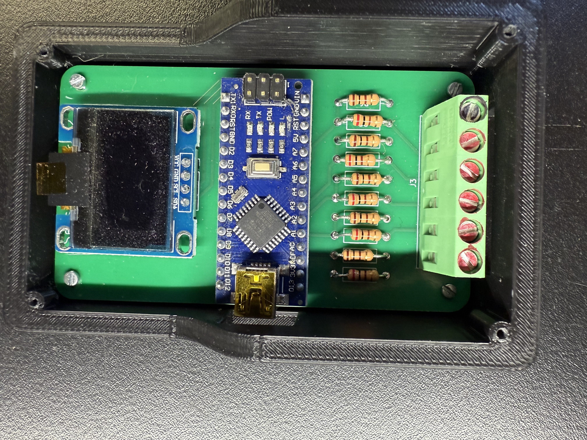
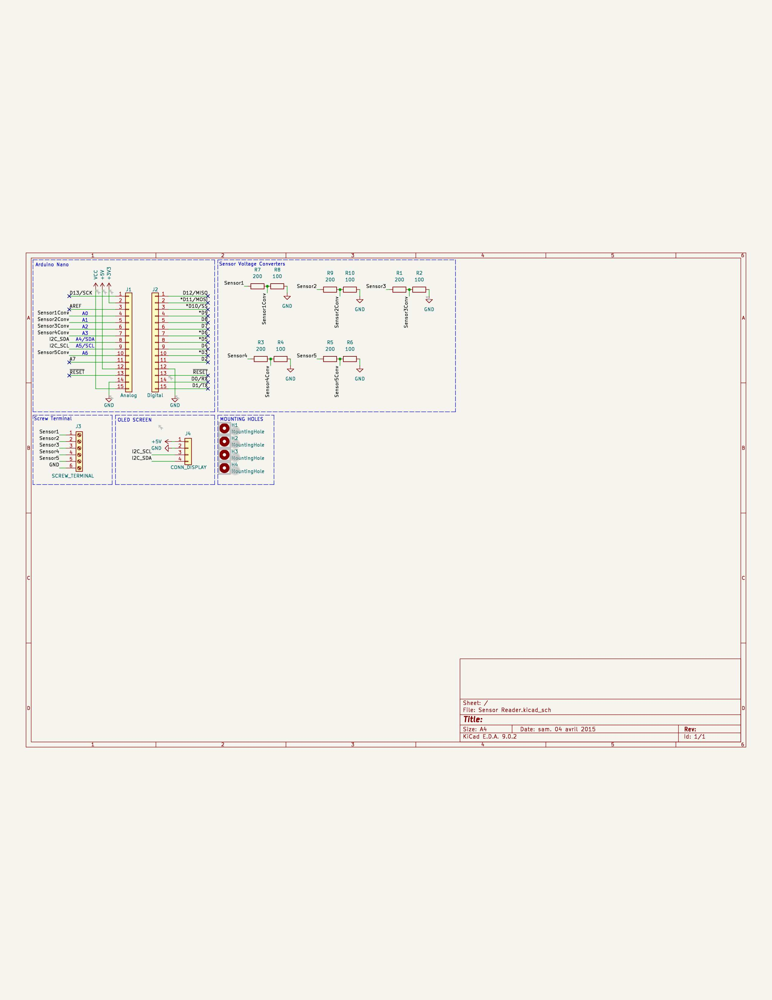
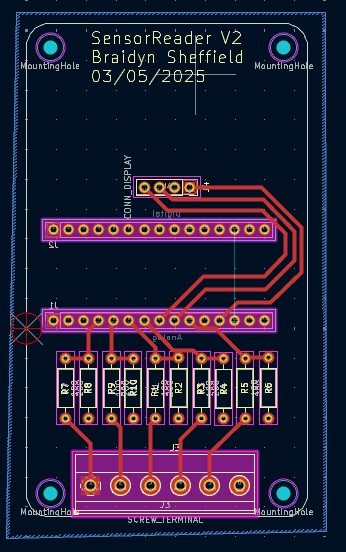
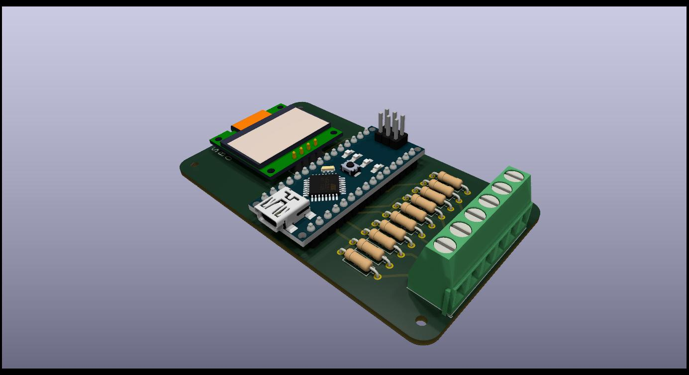
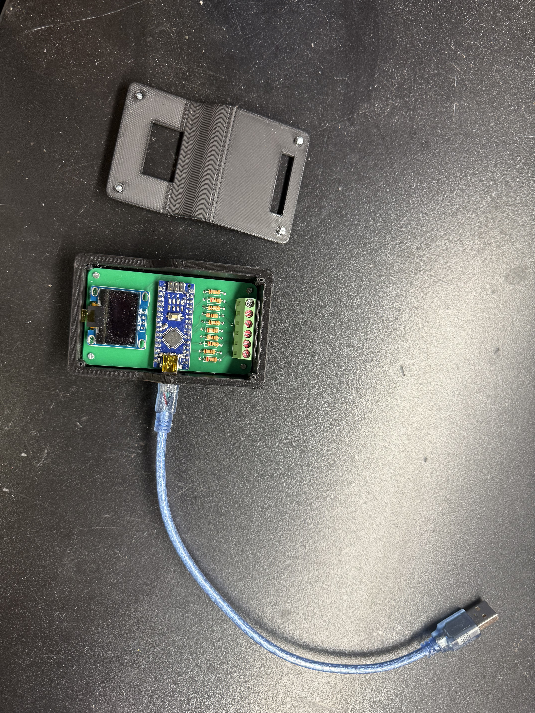

Multi-Channel Ignition Diagnostic Tool
A PCB-based system that reads ignition voltage from multiple points in a classic car to detect where voltage is dropping.

This Multi-Channel Ignition Diagnostic Tool was a self-driven project designed to help diagnose ignition issues in classic cars. Instead of analyzing timing or misfires, the goal of this device is simple: read ignition voltage from multiple points in the vehicle’s ignition system and display where voltage is dropping.
Multiple ignition signals are connected to the PCB from different parts of the system (such as the ignition coil, distributor, and spark plug leads). These voltages are read by an Arduino Nano, processed, and displayed in real time on a compact OLED screen.
If one channel shows a significantly lower voltage than the others, it indicates a possible weak connection, worn ignition wire, poor grounding, or component failure. This tool passively monitors the system—it does not interfere with or modify ignition output.
Designed in KiCad, the PCB includes:
- Multiple ignition input channels
- Voltage dividers and protection circuitry to safely read high-voltage signals
- Arduino Nano for processing and display control
- I²C OLED display connection



A custom 3D printed enclosure was designed to protect the PCB while mounted in the vehicle. It includes openings for sensor input wires, USB programming access, and a window for the OLED screen.

This project was programmed in Arduino (C++) to:
- Read ignition voltage from each sensor input channel
- Process and compare voltage levels to detect drops between points
- Display live voltage data on the OLED screen
You can view the full code on GitHub below:
View Code on GitHub- Microcontroller: Arduino Nano
- PCB Design: KiCad
- Programming: Arduino C++
- Display: 0.96" I²C OLED
- Enclosure: 3D Printed (PLA/ABS)
- Power: 12V to 5V regulated input